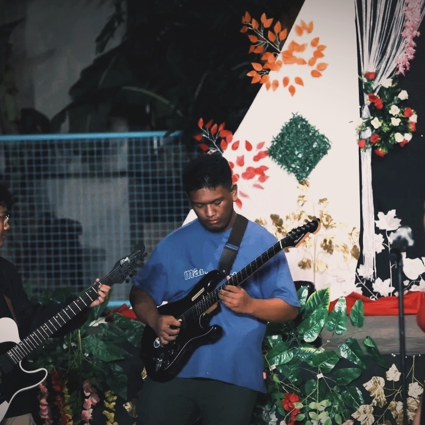

A curated collection of artworks, reflections, and creative growth throughout the semester.
About Me
Welcome to my Art Appreciation course portfolio. This collection reflects my journey in understanding and creating art, from learning foundational concepts to developing my own personal expression. Throughout the semester, I gained a deeper appreciation of how art communicates ideas, emotions, and perspectives.
I explored different media, techniques, and artistic traditions that shaped how I see and connect with the world around me. Each activity challenged me to think creatively that allows me to experiment and improve my skills.
Every piece in this portfolio represents a part of my growth through curiosity, challenges, and discovery. I invite you to explore my work and see how my understanding of art has developed over time.

Portfolio Works
Reflections